Một ngôi sao co sụp.
Hành trình bắt đầu.
Bản mới: sao plasma trắng–bạc → hố đen → góc nhìn lùi vào Hero; chữ/Nav tan thành các dòng hạt xoắn; camera tăng tốc theo lực hút. Comet thêm nhẹ hạt cyan. Chờ bạn duyệt hình ảnh và chuyển động.
Xem chuyển động
Clip ghi chuyển động từ trình duyệt, cuộn thật tới/lùi. Video mã hóa 30 FPS; số đo render được ghi riêng bên dưới.
Các pha hình thành

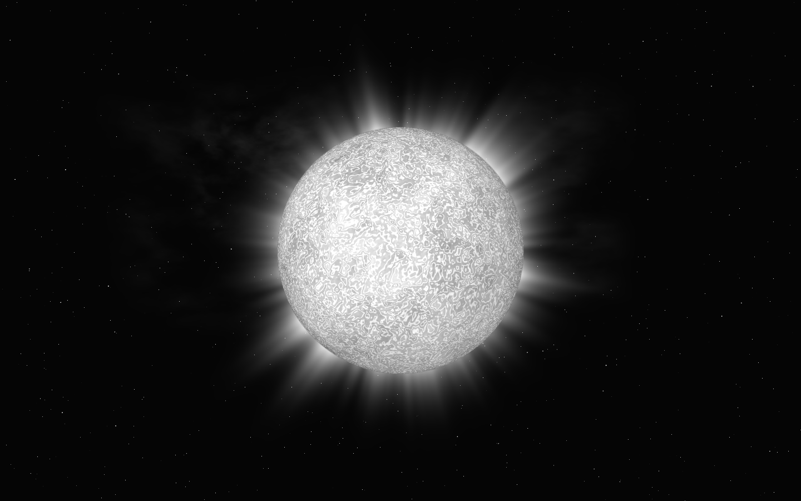

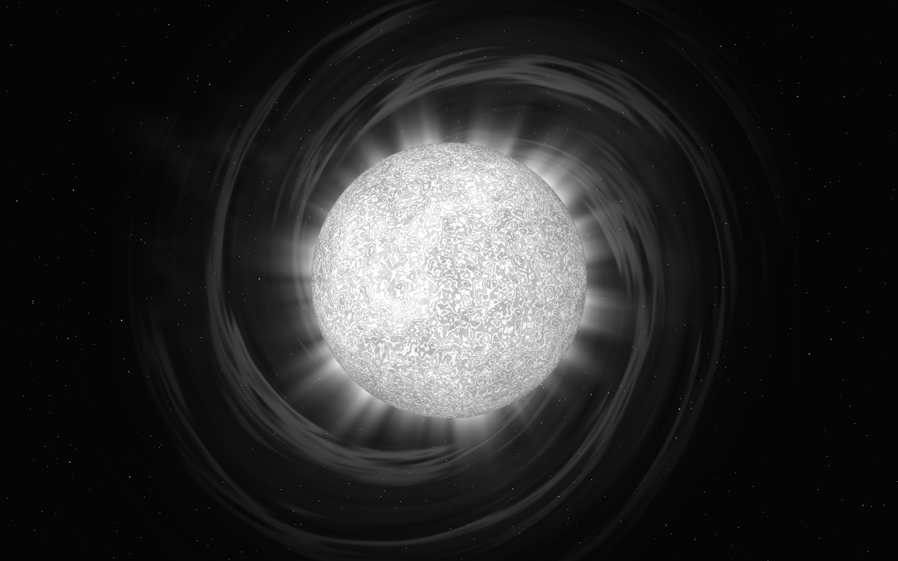

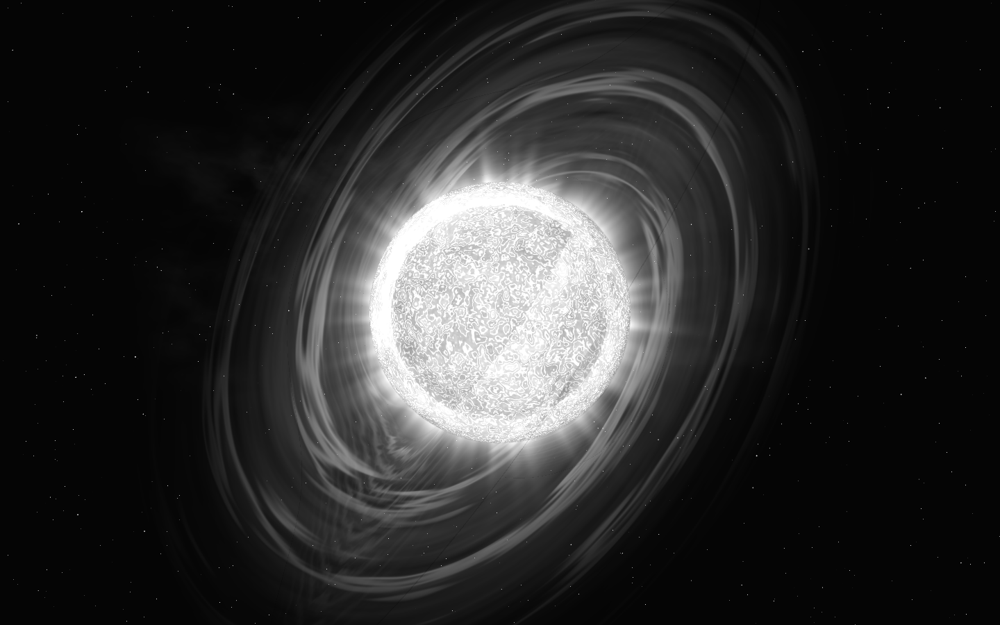

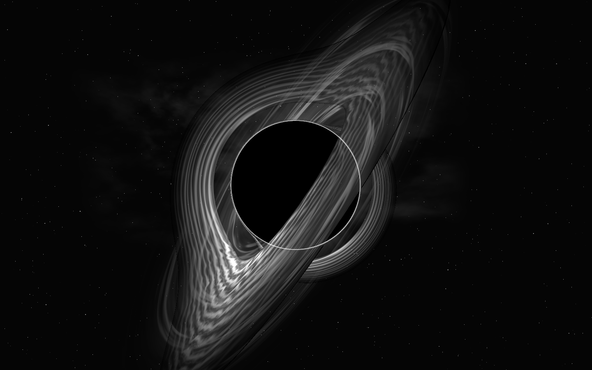

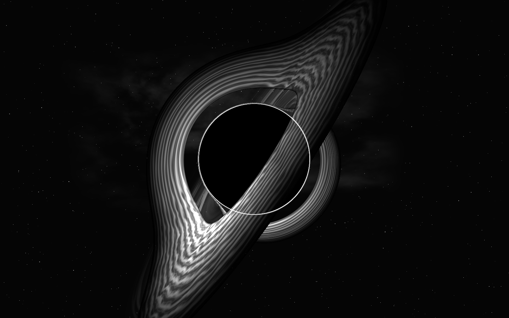

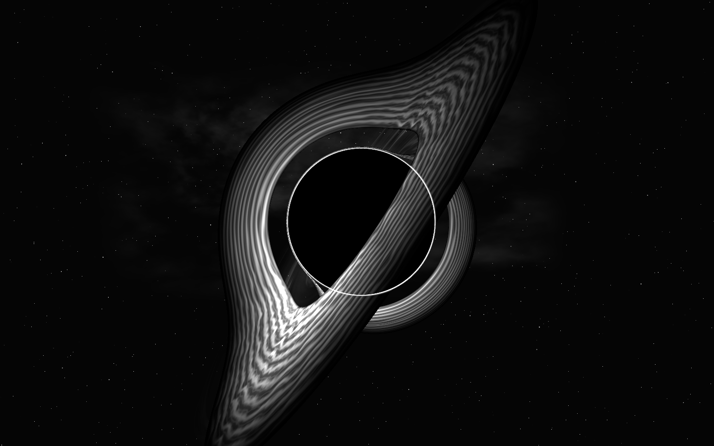

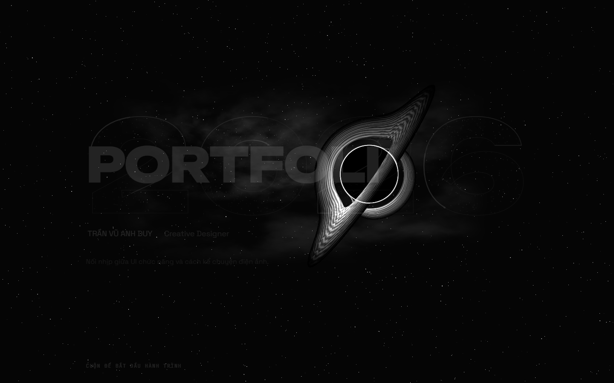


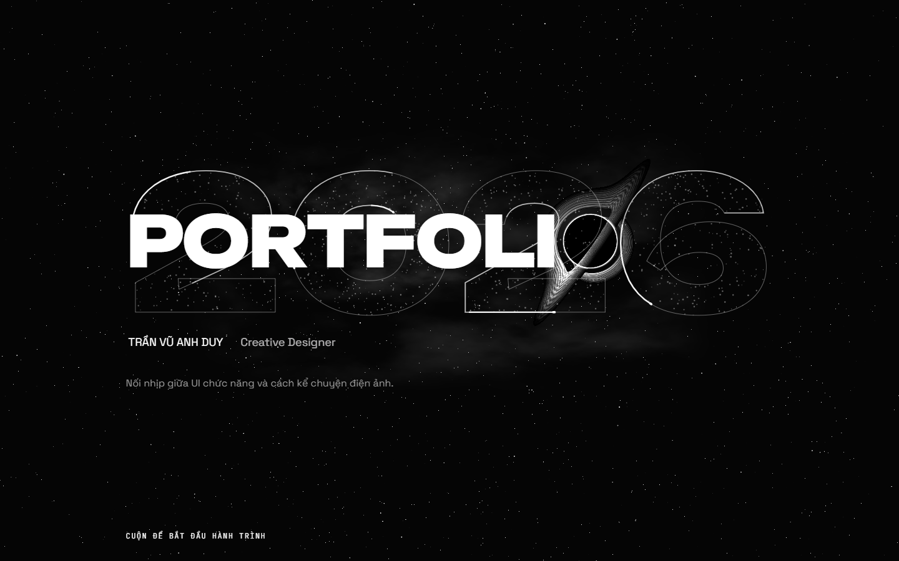
Tan hạt và hút vào lõi
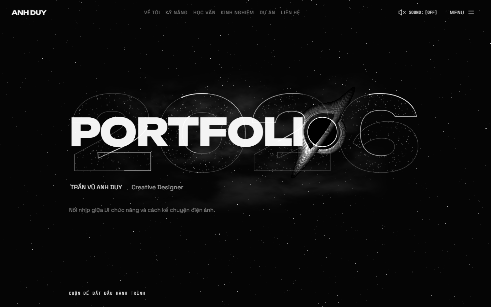

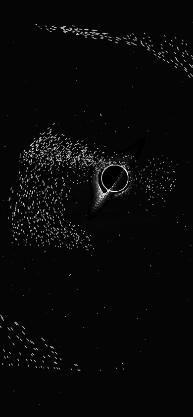

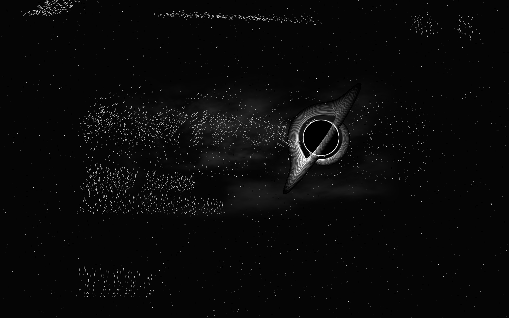
Comet

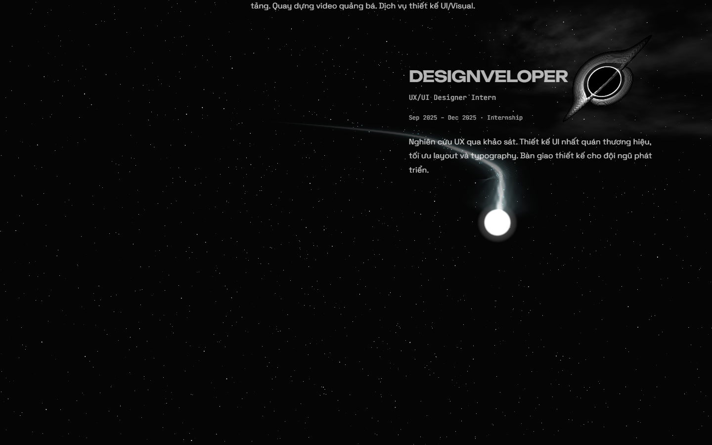

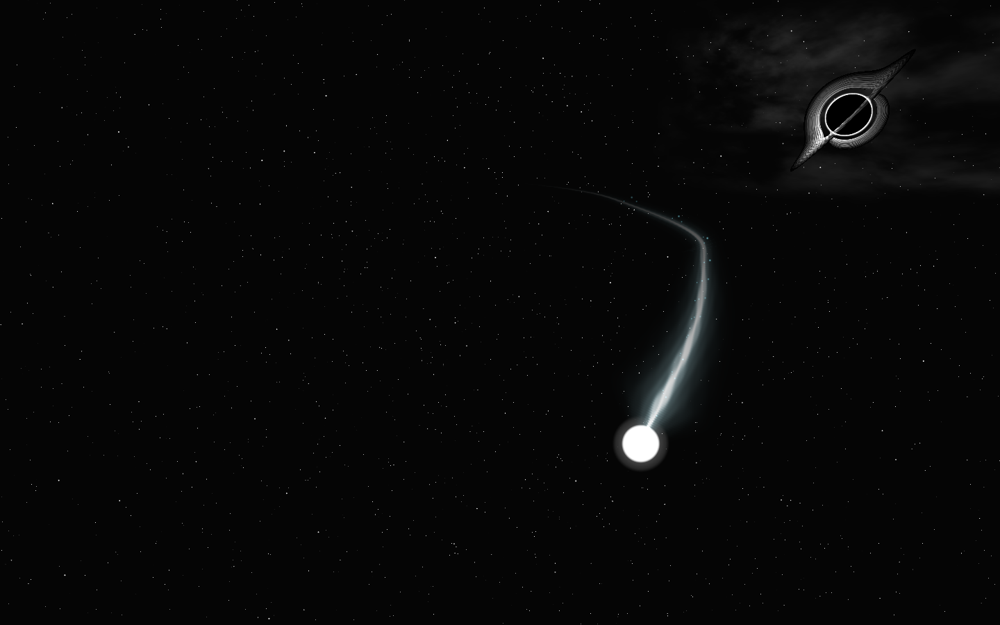
Kiểm chứng và giới hạn
Build/lint qua; 225 kiểm tra browser chính tại 390/1440/1920px, kèm kiểm tra menu/locale/resize/EDURA và motion. Một Canvas, một About thật. Xem verification để biết phạm vi và kết quả cụ thể.
opening-presentation: 55.7 FPS · hero-idle: 60.1 FPS · intake-native-scroll: 26.7 FPS · meteor-native-scroll: 60.2 FPS. Đây là số đo trình duyệt trên máy kiểm tra, không phải cam kết FPS điện thoại.
Giới hạn còn mở: đoạn hút đo khoảng 27 FPS trên Intel UHD 630, chưa đạt mục tiêu mượt 60 FPS trên GPU này. Giữ chất lượng HDR và độ phân giải hiện có; không coi performance gate đã qua.
Plasma procedural, tốc độ và chuyển cảnh được dàn dựng cho website; không phải mô phỏng vật lý định lượng. Không dùng video/ảnh NASA làm asset. Chưa kiểm điện thoại thật, OS motion thật hoặc deployment HTTPS.